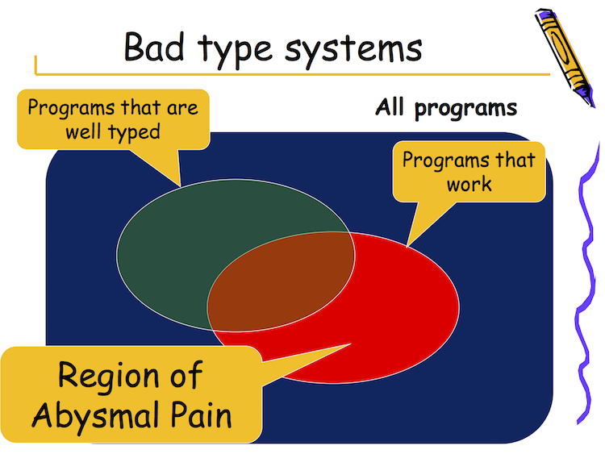

Haskell functions more closely resemble mathematical functions
Given any input value, they return the same output
This is referential transparency
Typically operate on immutable data
No side effects
Referential transparency means that the compiler is free to do all kinds of optimization such as interleaving and inlining etc. which typically require additional annotations or data flow analysis in compilers for languages such as C++ and Java
1.2 Non-strictness
Function arguments not evaluated unless they're actually used
A strict function is one which always evaluates all of its arguments
Non-strictness allows lazy evaluation
Haskell has annotations for strict evaluation where necessary
Lazy evaluation allows control structures to be built from user-defined functions
1.3 Static typing
Catch many kinds of programmer error at compile time
Expressive type system allows programmer lots of power and flexibility

Simon Peyton Jones Region of Abysmal Pain Venn diagram
1.4 Call-by-need
Effectively call-by-name with memoization
If a function is evaluated its value is stored for future uses
Most of the time the required indentation is what feels right
1.6 Garbage collection
Haskell computations can produce a lot of memory garbage
Partly a consequence of non-strict evaluation which involves accumulation of thunks in memory
Also, partly a result of immutability
However, the GHC runtime's GC is highly tuned for this behaviour
Manual management of external resources such as externally allocated memory or resource handles is possible
1.7 Naming conventions
Values and type variables start with initial lower-case letter
Types and type classes start with initial capital letter
Names typically employ medial capitalization, e.g. MyType and myFunction instead of My_Type and my_function, though this is not enforced
Punctuation such as ' allowed
Some common, but not mandatory, suffixes exist including M and M_ etc., e.g. foldM, mapM and forM_
Operators are no different from functions except their names are spelt with symbol characters and can be used infix
Backticks can be used to use regular functions infix while parentheses can be employed to use operators in function-style prefix position
Type and data constructors are separate namespaces and can, therefore, share names
It is not uncommon to see type constructors with identically named data constructors, which we'll see later
1.8 What else?
Haskell has a clean, minimal syntax
Much of this is a consequence of some of these other characteristics
Example: non-strict evaluation allows us to build certain flow control constructs where other languages require language-level syntax
To a first approximation, Haskell programs consist of two elements:
Definitions
Expressions
Nontrivial Haskell programs will also likely include some extras:
Type annotations
Pragmas
Import statements
2 Our first Haskell code
2.1 Interactive Haskell
First you'll need to start your terminal or command prompt. Once you've done that, we'll create a brand-new Stack project named hello-world:
stack new hello-world simple --resolver=lts-7.8
cd hello-world
The simple template is one of the simplest-possible Haskell projects: a project with a single executable target with the same name as the project itself, i.e. hello-world in this case. It consists of the following:
LICENSE: a licence file (BSD-compatible, by default)
Setup.hs: a Haskell program used to pull in and build external project dependencies such as native libraries etc.
hello-world.cabal: the Cabal file, which is akin to a project file in Visual Studio etc.: this defines various metadata for the project including an executable target
src/Main.hs: a simple starter source file
stack.yaml: a Stack-specific configuration file
Next we'll start up GHCi, the interactive Haskell interpreter:
stack ghci
GHC is the Glasgow Haskell Compiler
GHCi is GHC Interactive
It's GHC's read-evaluate-print-loop (REPL)
I've configured my prompt to display λ> but the default is likely to be Prelude> or Main>
Let's assign some values and evaluate some expressions
Input
Output
Comment
λ> x = 5
Assigns name x to value 5
λ> y = 6
Assigns name y to value 6
λ> z = x + y
Assigns name z to value x + y
λ> z
11
Evaluates z and displays value
λ> :type z or λ> :t z
z :: Num a => a
Shows type of z
λ> :t 5
5 :: Num t => t
Shows type of 5
λ> z = "hello"
Assigns name z to value "hello"
λ> z
"hello"
Evaluates z and displays value
λ> :t z
z :: [Char]
Shows type of z
λ> :t (+)
(+) :: Num a => a -> a -> a
Shows type of + operator
λ> :q
Quits GHCi session
Notes:
We say "assigns name foo to bar" as opposed to "assigns value bar to foo"
In imperative programming languages = or equivalent operators typically perform assignment and the different values can be assigned to existing names from time to time
In Haskell, the name foo is defined to be the value in the equational sense of =: it's a definition and this is at the root of equational reasoning
In the absence of type annotations—which we'll cover later—GHCi will typically assign the most general type possible to an expression, subject to certain rules
GHCi will assign exactly one type to a given expression
Despite the absence of explicit type annotations in this example, the expressions are still strongly and statically typed
Type signatures consist of:
Optional: one or more constraints to the left of => (pronounced "implies")
Types and type classes always spelt with initial upper-case letter
Type variables always spelt with initial lower-case letter
One or more types separated by -> (pronounced "to")
We haven't seen any -> yet, but we will soon
Num a is the type class Num with one type variable a: more on this later
2.2 Your first Haskell source file
Now we'll create a source file and write similar code. We'll then run this through a compiler and execute it. In your favourite editor, open a new file Hello.hs in the existing hello-world project directory and type the following text into it:
x =5
y =6
z = x + y
main = print z
Most things you type into GHCi are valid lines of code in a Haskell source file
In order to be able to run a program, a Haskell program must have exactly one function named main in the Main module (or unnamed module) and must have an IO type
print is a function that takes as an argument any value that has an instance of the Show type class: we'll talk about type classes more later
Now we can run the program as follows:
stack runhaskell Hello.hs
Now we'll change Hello.hs to the following to mimic our GHCi example:
There are naturally many differences between the interactive and non-interactive Haskell environments. The most important ones for our immediate purposes are:
Names can be shadowed in GHCi: i.e. we can introduce a new z that hides the previous definition with name z
In Haskell source files, a top-level name can be used exactly once
Shadowing is allowed within Haskell source files, specifically within nested lexical scopes
In fact, that is exactly what's happening in GHCi: each line entered at the prompt is effectively a new lexical scope nested within the previous lexical scope
λ> x :: Integer; x = 5
λ> y :: Integer; y = 6
λ> z :: Integer; z = x + y
λ> z
11
λ> :t x
x :: Integer
λ> :t y
y :: Integer
λ> :t z
z :: Integer
λ> a = 5
λ> :t a
a :: Num t => t
Let's do that in our source file:
x ::Integer
x =5y ::Integer
y =6z ::Integer
z = x + y
main ::IO ()
main = print z
Consider the type of a:
Lower-case t is a type variable and can be any type that fulfils the type constraints
Num t constrains t to be an instance of the Num type class
Num has instances for (or "is implemented by") all primitive numeric types in Haskell
Consider the type of x, y and z:
These have no => and, therefore, no type constraints
Upper-case Integer is a concrete type corresponding to arbitrary-precision integers: this is an instance of Num
We'll talk about IO () next lesson
3.1 When to use type annotations
Haskell has powerful type inference
Haskell designed in such a way that usually you won't need them